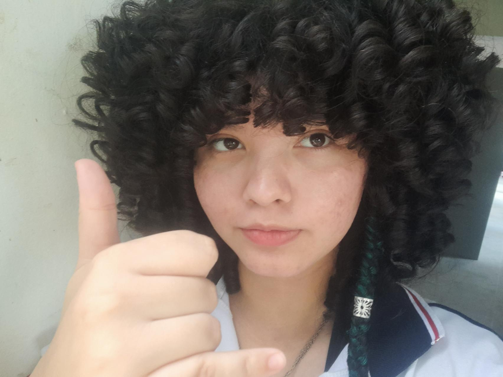

Conheci uma linda garota na escola, nossa, ela era tão linda. Talvez seja clichê dizer, mas, ela não era só linda - Era uma pessoa que me fazia me sentir mais livre. Mal nos conhecemos e passamos horas e horas conversando todos os dias, e, essa frequência se mantém mesmo após tanto tempo. Gosto disso. Gosto de continuar sorrindo ao ouvir a voz dela, ao receber mensagem dela, ao estar perto dela, ver o seu cabelo cacheado imenso de lindo, eu amo ser tão próximo de alguém tão incrível ❤️ os dias com ela só se tornam cada vez melhores, parece que ela sempre tem um cheirinho melhor, ou está mais bonita, ou mais engraçada. Mas, percebi que não... Talvez, seja só eu, amando e amando mais quem ela é. Por mais que não mude em nada, ela se torna mais incrível só pelo tanto que me fez amá-la, e sou extremamente grato por quem ela é, por tudo que fez por mim, tudo que fez por nós, mesmo sendo apenas amigos. Quer dizer... acho que já passamos dessa fase, talvez só não aceitemos isso ainda. Ainda não acho que temos tantas certezas sobre nós, mas... Dentre todas as minhas dúvidas entre o que pode acontecer ou não, a única certeza que eu tenho é a que eu te amo.
Eu tava doido pra falar algo mais diferente do que estavam dizendo nas cartinhas hoje mais cedo, sei lá, tudo parecia tão comum. E nós não somos comunsKJKK, acho que não é todo romance que alguém cria um site no dia dos namorados só pra pessoa amada (mesmo isso parecendo muito clichê), queria poder chegar pouco depois de você sair, com cheirinho de perfume novo, arrumado e bonitinho como nunca, só pra poder comemorar um dia que talvez nem seja nossoKJKK mas poderiamos fazer ser. Acho que não foi o dia certo, mas, agora posso te dizer o que queria falar mais cedo:
Você é o fenótipo mais perfeito que uma sequência nucleotídica foi capaz de condicionar. Isso é óbvio, não foi um elogio, apenas um fato, mas é o mesmo para cada beleza sua, cada parte de você é inegavelmente tão preciosa quanto você foi na sequência nucleotídica
Dito isso, após dar tanta ênfase ao quão ditoso sou por ter você, perdão por talvez isso não ser a forma mais romântica de falar tudo isso, mas: Feliz dia dos namorados, amor meu que ainda não é meu. E obrigado pelo pirulito de hj mais cedoKKKK agora slg a mina mais bonita do mundo:
